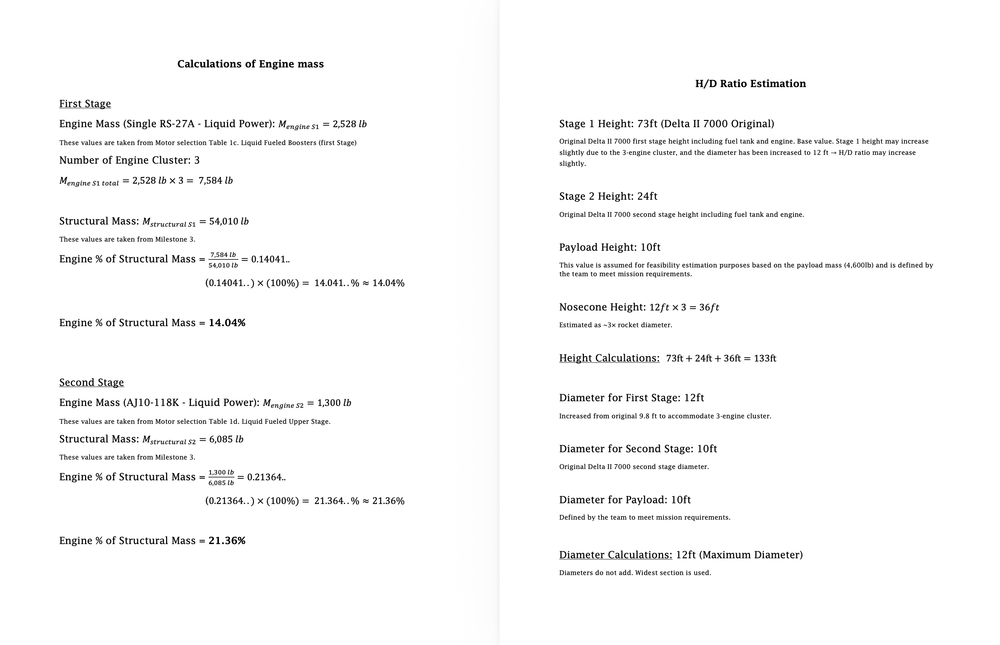

01
Engine selection
Validate a propulsion choice from an inherited baseline.
A teammate supplied the vehicle requirements and baseline data. I independently compared engine options and iterated the mass and geometry calculations until I identified a usable arrangement for Milestone 4.
Result · A propulsion choice supported by the vehicle’s mass and proportions.